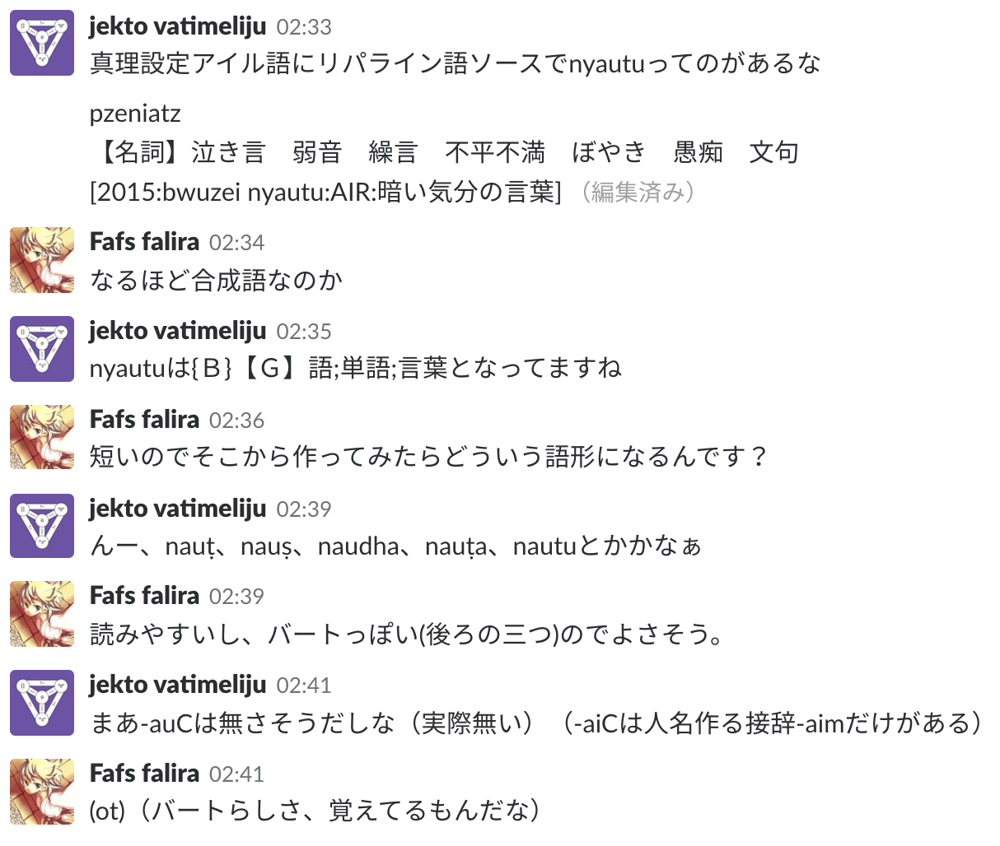

part1とは異なり、とりあえずとりとめなく造語をしていく。
というよりも、造語をまとめたページという感じにしていく。
「塩」を造語することになった。ガチャがfalseだったので、アイルでピッタリ「塩」ではないものも検討する。
36個もあるので、ガチャを3回引いてみよう。quvoo「塩漬けにする」, gio「岩塩坑」, idua「塩を加える;塩漬けにする」といったところか。
quvooとgioが同根かも？と思ったが、アイルで濁ることってあまりない。さて、濁るといえばバートである。ということで、祖語*kyooがアイルに直に入った形がquvoo、バートに入った形がghíyo「塩」でそれをアイルが借用した形がgioである、となった。これなら「岩塩坑」などというニッチな語義なのも説明が付く。
ちょっと考えたので書いておく。
パイグlu2はアイルlutwuに由来する。さて、藍l-であって古牌lr-ということは、バートだとḷとかになりそうなものだ。しかし語頭にḷは来ないのでr……ん？rúṣ？「下」？
ん？燐字で「新」 は「下」
は「下」 +「時」
+「時」 ？？？おや？？？？？？
？？？おや？？？？？？
（あれ、これ「時」 =「日」
=「日」 +「足」
+「足」 じゃなくて「日」+「耒」やん。異体字かな。「古」
じゃなくて「日」+「耒」やん。異体字かな。「古」 は「時」=「日」+「足」だけど。）
は「時」=「日」+「足」だけど。）
後に確認したところ、仕様だそうな。
ということで、名詞rúṣを属格で用いると「新しい〜」も指せる、ということにした。
リパライン語に借用されているアイル語単語asiti「ハーブ、香草」があるので使っていきたい。
ásitúḷかなぁ。
頭に子音があってもいいかもなぁ。現状の分布は
zero 13 h 3 l 1 r 2
なので、それぞれに1足した14/4/2/3でロール。r。rásitúḷ。
coinの6-6.で触れた、状態動詞「見ている」を作っていきたい。ガチャ→非アイル。パイグの同根は既にあることを考えると、ダイスかな。
ダイスロールに使うやつを再掲すると、
頭子音
zero 21 22 22 bh 15 16 38 k 15 16 54 h 12 13 67 s 10 11 78 z 8 9 87 ṣ 8 9 96 n 7 8 104 c 6 7 111 b 4 5 116 dh 4 5 121 d 4 5 126 j 4 5 131 r 4 5 136 gh 3 4 140 l 3 4 144 m 2 3 147 kh 1 2 149 w 1 2 151 ḍ 1 2 153 g 0 1 154
母音
a 92 93 93 á 83 84 177 o 31 32 209 e 27 28 237 í 20 21 258 i 15 16 274 u 11 12 286 ú 8 9 295 au 6 7 302 ai 5 6 308
子音
m 41 42 42 k 37 38 80 n 34 35 115 bh 22 23 138 h 20 21 159 z 16 17 176 t 14 15 191 b 11 12 203 c 10 11 214 d 9 10 224 l 9 10 234 gh 9 10 244 r 9 10 254 ṣ 9 10 264 dh 8 9 273 s 8 9 282 ṣl 7 8 290 j 7 8 298 p 6 7 305 ṇ 6 7 312 ṭ 4 5 317 ḍ 3 4 321 w 2 3 324 ḷ 1 2 326 y 1 2 328 kh 1 2 330 ph 1 2 332 g 0 1 333 ゼロ 19 20 353
なので、zero[7/154]→o[185/308]→k[48/353]→á[170/308]→k[53/353]でokákúḷか。
「願う」はパイグとかだとhia1を使うそうだ。ガチャ→非アイル。じゃあこちらも「願う」「希望」は「心」の同根で行くか。
「したい」とかにも使えそうですな。
前回「心」ではrかhかダイスロールしてたので今回も。r。ríjúḷかなぁ。いやrijúḷだな。
「希望」はこれに-zかな。とはいえrijazは違和感があるし、ここは不規則でrízとするか。
rijúḷ、命令形もríとかになりそう。
ん、-zは「考える」を「思考」にする接辞だからrízは「願うという行為」とかでは？
んー、heyázの使用例を見るか。-zの語法ってまだしっかり決めてなかったし。
ṣiṇṇa ká-om amáma nádít-í ja bháṇ-í-ḍi nána ghán-í-∅ cákík-a-ká áṣá kom heyá-z-i hína daupha-∅ hem-akátá hem.
しかし 彼女-GEN 大きな 眠い-NMLZ と 愚かだ-NMLZ-POST REL 暑い-NMLZ-NOM 訪れる-CAUS-3N.REAL 〜を原因として この 考える-NMLZ-POST 〜に 限界-NOM ある-3N.PST.PTCP PFV
しかし、暑さが訪れさせた彼女の大いなる眠さと愚かさが原因で、この思考には限界があった。
んー、これなら"what A thinks"でも"the act of thinking"でも意味が通るな。じゃあ-zは"what A does"であって、rízも"what A wishes" = "a wish"でいいのかな。
そうそう、heyázも辞書に載せちゃおう
ríz、普通にrijzなのでは？bhajhíなんだし。
よし、「願い事・望み」をrijzにして「希望・明るい展望」をrízにしよう。passedとpastみたいに。
牌syt2、藍siusa。辞書を引くとccrssssssssṣなので、cccrrssssssssṣṣでダイスロール。ṣ。ṣúsaかな。
不定詞主格 + 「多すぎる；過度である」；名詞化第四接尾辞 + 「多すぎる；過度である」のどちらもできそう。
ガチャ→アイル。ousi, suvoo, naka, s'aiyeai, yeikiといった感じか。（コロコロ）suvoo。
quvooはghíyoだったが、今回は動詞だからなぁ。hurooがhorúḷだしなぁ。（cccrrssssssssṣṣṣコロコロ）sか、んー、síyoúḷかな。
牌nam2, 藍nameでnámúḷ。反り舌のnは語中ならṇだけど語頭ではnで現れるのでね。
「開く」の具体的な語義については、なんか案が思いついたので書いておいた。
祖語lumi, アイルumiである。ならlúmとかになりそうなものだが、うーん、lúmにしかなりようがないか。
んー、ただlúはバートっぽくないなぁ、/lu:/ → /luə:/ → /lo:/かなぁ。lomですな。
タカンで作ってあると思われていたが、実は作られていなかったので一緒に作ることに。
ダイスロールしてacauを使うことを決定。バートならácahúḷですな。
アイルは「［他］～する能力がある,～することができる」だそうだ。さてバートでの格はどうしよう。
まあ、不定詞+emaで取るのが無難か。「〜(主格)には〜(対格/不定詞+ema)ができる」「〜(主格)は〜(不定詞+ema)することができる」「〜(主格)には〜(不定詞+ema)する能力がある」「〜(主格)は〜(対格/不定詞+ema)を実行できる」かなぁ。
タカンがtetuなのでバートもその系統で。アイルtata、パイグtetなので母音をちゃんと考えよう。
祖語がシュワーとかなのかなぁ。tq-tqの畳語か？datといったところか。
さて、品詞をどうしよう。名詞を修飾するものなので副詞とは呼べない。タカン語文法略説ではtetuは「副助詞」というところに分類されている。
タカン語で同じく副助詞に分類されているoはバートではjoで、名詞接続詞なので前の名詞には格が付かないが、datについては格を付けねばだからなぁ。
2分考えた結果、「名詞無格 + dat + 格語尾」で良さそうという結論になった。さて、品詞の名前をどうしよう。
「dhoḷop datele」とか「ápa dati hína」みたいな綴り方になるのだろうし、助詞っぽくもないんだよなぁ。
「dhoḷop datele」とは言わないだろうなぁ。「dhoḷopi datele」だろうなぁ。
ということは、主語でない主格（いわゆる「無格」）って子音幹だと-iが付いたりするんじゃなかろうか。ちなみに前例は全部母音幹または不定詞なので互換性は切れない。
「名詞接続詞・dat詞の前に来るのは、母音幹の場合は主格、子音幹の場合は後置格」という扱いにするか、それとも別の格として立てるか。
んー、主語じゃないしなぁ。別の格として立てるのがキレイな気がする。文法書に書いてくるか。名前が思いつくまではFIXME格としておこう。
「残存格」などの案も出たが、結局FIXME格は「無格」という名前にすることとした。
datはどうしようなぁ。
kpht「複合語説を取りたい。格変化はdatがするんだし、datが名詞として捉えられてるんじゃないの？」
j.v「一リパラインあるんだけど、タカン語では「副助詞」という扱いで、joとかjaと一括りにされてるんよね。バートでも、前に来る名詞の形が共に無格という特徴がある。」
j.v「後もう一つ、不定詞語尾にdatやjoが付きうるというのがあって、不定詞語尾が複合語を作るというのはなんかなぁ、という。」
j.v「とは言え、イントネーション上は名詞+joや名詞+datは単一のイントネーション単位に収まるので、複合語ほどではないけど完全に分離した2単語でもない。」
j.v「しかしまあ、不定詞語尾にも付くことができる以上、joとかdatの前にはスペースを空けて書く。後置格+後置詞もスペース空けて書くし。」
古パイグmahk、アイルmaqui。bákúḷかなぁ。
受験が一段落ついたkpht氏に文法書を見せたところ、例文とかが欲しいと言われた。それはそうなので、例文を足すことを考えてみる。
kpht氏に提案された例文は以下の通り。
曲用の説明 人々は立つ その男性は花を摘む。 彼らは試合中にお茶を飲んでいる。 （任意のバートっぽい人名）は（任意のバートっぽい人名）に花をあげる。 関係代名詞の説明 私は、私が読んでいる本を兄弟に与えた。 レシェールはバート語が話されている地域に行きたい。 私が優しいと思っている彼は犬を殺した。
| 既にある | まだない | ||||||||||||||||||||||||||||||||||||||||||||||||||||||||
|
|
あと、レシェールはlexerlなのでlexeḷになるなぁ。
しかし、bhátán zephaとbhátúḷが同根で微妙に紛らわしいので、ユーゴック語にでもしようかなぁ。じゃあ花のやり取りの方にlexeḷを回して、カラムディアに行きたいṣabhahumくんを導入しよう。
「ユーゴック語」はリパ経由ならyrgokk → yúgok…んー、júgokかなぁ。júgokán zepha.
アイルohi、古パイグhih。とは言え、別語でもいいな。58%ガチャ→false。じゃあohi系統で作るしかないか。
S.Y「タカンはokiになると思う」なるほど。じゃあバートもo-かなぁ。
ohiでいいか。bohúḷとかあるし。
part1の2-8.の辺りで『余談だが、バート語は「数字(数を表記するための文字)」と「数(数字とかによって表される抽象概念)」を明確に区別する予定なので、リパラオネ人はdieniepとかpakdaの感覚で語を混同してバート人に突っ込まれそうである。』と書いてあるので、作っていこう。
牌mak2、藍makaをそのまま使えば良い。bághaでしょう。
ガチャ→非アイル。なるほど？じゃあアイルの別語+bániで作るか。
kunata, buia, keika, libau, viniとかでいいか。（コロコロ）buia。じゃあbhájabániかな。
ガチャ→非アイル。
パイグ語で韻図ガチャをしたところhauk1となったので、バートはraukiとなった。
パイグでsyt2 nua2「天の水」と言うらしい。じゃあṣúsahomá nuttaでええやろ。
ついでにamilahomá nuttaとsákahomá ḍázを辞書登録しておいた。
「用法」に載せてた諸々もそのまま採用した。
古牌拼lrotでアイルloduなので*l₃-で、rodúḷでしょうな。
燐字の方の44-1.と46.でやったとおり、
| 意味 | アイル | パイグ |
| AはBをCとみなす | A-他格 B-他格 C-処格 xiyu | A裁B同C |
| AはBを裁く/分別する | A-他格 B-他格 xiyu | A裁B |
である。さて作るか。
とはいえ、アイルx-のバートでのonsetって実はまだ決めてないのよな。仕方ないし、乱数で決めてそれに一貫させるか。
ṣ-かc-の2択かなぁ。久々に乱数表で回すか。coinの4-3.だから2017年12月27日の古い代物だけど、まあよかろう。ṣが9、cが7なので（コロコロ）ṣ。ふむふむ。祖語のx-はṣ-になるっぽいですな。
んー、ṣijúḷ？発音しづらいなぁ。ṣíyáúḷですな。
バートの場合、「AはBをCとみなす」は具格でしょうな。基準具格。
前から思いついてはいたけど実装していなかった案「ukiとkisiが合流してkíになる」を採用することにした。
えーと祖語は'sl₂ukか。じゃあaまたはáで、aṭam / ákíjam, ám, ámaなので2:4でロール。á。
そもそも、アイルの語中のsってどう現れるんだろう。例を見てみるか。
| アイル | バート |
| asi | lási |
| asiti | rásitúḷ |
| thaise | dheseúḷ |
| kaisa | (káṇ)aisa |
| siusa | ṣúsa |
前例に従って、-s-でいいでしょ。uはuなのでásu-。
子音幹が30で母音幹が72なので、31:73でロール。母音幹。じゃあásúCaか。ásuCaは違和感あるので。（このこと明示しておきたいな。末尾の短x2がダメなのか？いやそんなことはなく、adha、amila、aṭaza、taku、ṣabhahuがある。んー、長短短が禁則なのかなぁ）
-kaが2個、-ghaが2個なので半々でロール。-ka。
ásúkaですね。
名詞化第一接尾辞の意義をちょっと拡張し、bákaz「我慢」を作成。
バートさんで単語ツイートしていたら「単語」ツイートが欲しくなった。パイグだとman1 dat2でいけそうとのことだが、流石にbánihomá dháradは長い。
ということで、nautuになった。
翻訳依頼があったので考える。末尾は-úḷ heyákáṣlo?でよかろう。
ácahúḷは能力可能なので、ダイス→アイルよりtanu「しても良い」を引っ張ってくる。アイル語頭tはもれなくd-なので、danúḷかな。
「サボる」はアイルにするなとのダイス神からのお達しである。
SY「パイグならmun1 mok1」j.v「それだ」となり、"ám bohúḷ, ko danúḷ heyákáṣlo?"となった。
また、この過程で「"ám bohúḷ danúḷ heyákáṣlo?"だと違和感」ということが発見された。どこかに書いておこう。
ということになった。
全地集銭論、
— S.Y (@S_Y15) 2018年4月16日
来くわ周故し！ pic.twitter.com/Ozt7GJMOg6
タカンで「全地」らしい。じゃあbháとepaでbháepa…んー、母音衝突がアレだな。
音韻法則によると*fu-はh-にもなれるのでbháhepaでいいか。
紆余曲折あったが、「パイグからの借用でxízíaにする」という案が気に入ったのでこれにする。これ以外の挨拶も当然あるだろうけど。
kádúḷ「目立っている」に-a-でいいですね。kádaúḷ。
刀はngongau.arでgau2.pk、弓はnguwa.arでgua2.pkですな。
さて、アイルのng-ってバートに前例が無いんよね。どうしよう。漢語方言地図集でも見るか。
見た。んーどうしよう。
存在頻度が空気なgをここで出してやるという手もあるな？
いや、ghにします。鄭州で疑母がɣになるそうなので。
刀は祖語が*graugrauということになっているので、まあghauかなぁ。Cau単立は前例がないけど、前例が無いだけで別に禁則には当たらないからなぁ。Caiも一例しかないし。
弓…んー。藍wuoがhoになってる例とかありますねぇ。んー。
gháかなぁ。他にどうなりようもないし。
パイグgau2 gua2「武器」のような、複数の形態素の並立からなる語をバートで借用するときには、ghau ja gháのように、jaで並立させることとした。当然、格変化するときにはそれぞれの文法に従うので、格変化表を書くなら次のようになる。
ghau ja ghá「武器」
| 主格・無格 | 対格 | 属格 | 具格 | 後置格 | |
| 単数 | ghau ja ghá | ghau ja ghádhel | ghau ja gháom ghau ja gháhomá | ghau ja ghábhau | ghau ja gháḍi |
| 複数 | ghauzá ja gházá | ghauzá ja ghádhelá | ghauzá ja gháomá ghauzá ja gháhome | ghauzá ja ghábhauná | ghauzá ja ghádhíná |
ガチャ→非アイル。ふーむ。
久々に転がすとするか。
ダイスロールに使うやつを再掲すると、
頭子音
zero 21 22 22 bh 15 16 38 k 15 16 54 h 12 13 67 s 10 11 78 z 8 9 87 ṣ 8 9 96 n 7 8 104 c 6 7 111 b 4 5 116 dh 4 5 121 d 4 5 126 j 4 5 131 r 4 5 136 gh 3 4 140 l 3 4 144 m 2 3 147 kh 1 2 149 w 1 2 151 ḍ 1 2 153 g 0 1 154
母音
a 92 93 93 á 83 84 177 o 31 32 209 e 27 28 237 í 20 21 258 i 15 16 274 u 11 12 286 ú 8 9 295 au 6 7 302 ai 5 6 308
子音
m 41 42 42 k 37 38 80 n 34 35 115 bh 22 23 138 h 20 21 159 z 16 17 176 t 14 15 191 b 11 12 203 c 10 11 214 d 9 10 224 l 9 10 234 gh 9 10 244 r 9 10 254 ṣ 9 10 264 dh 8 9 273 s 8 9 282 ṣl 7 8 290 j 7 8 298 p 6 7 305 ṇ 6 7 312 ṭ 4 5 317 ḍ 3 4 321 w 2 3 324 ḷ 1 2 326 y 1 2 328 kh 1 2 330 ph 1 2 332 g 0 1 333 ゼロ 19 20 353
なので、zero[21/154]→e[236/308]→n[104/353]→í[258/308]→h[144/353]→a[30/308]→m[32/308]。ふむ、eníhamúḷか。うーん、なんだろう。
いや、こんなferet nos extra → fenestraみたいな怪しい説立てるよりは、「語源不明」にしておくべきだろう。
…
…
…
どうしてもしっくりこないので振り直し。s[77/154]→e[223/308]→h[145/353]→á[155/308]→z[163/353]。seházúḷか。あーこれいいな。dházúḷ「楽しい」とも似ているし。
アイルchade、牌zat1。えーと楽なz-類か。藍pheduがbhát(úḷ)で藍dadoがdhárad、藍lodoがrodúḷ、という感じか。zádúḷだな。
いや、eが残るかどうかも考えねば。んー。
name、dibee、baibaeは落ちててthaise、h^ut^ee、ceeは残る、と。はい唇か舌かですね。やっぱり唇のあとのeを嫌うんだなぁ。
ということでzádeúḷです。普通だな。
「AはBを尊敬する/軽蔑する」をパイグ語でA裁B同Cの形で書くなら、「善/悪」がよかろう、ということになった。
『なら、non1、バートでは「質が劣悪である；劣っている」を第一義にするか』と思ったので、やっていこう。なおアイル語は「憎い」だけど。
nonúḷ「劣っている」、non「劣悪なもの」とでもするしかないよなぁ。
1月末から温めていた翻訳、ようやく前半部分が終わったので貼っておくか。
cákíkakátá, rúṣán ákíjam. rízán ká hem, ákíjam. raukidhel(ə) seházíḍi cájau nám. ṣúsa nonai ṣíyá ám.
元曲がわかった人は@sosoBOTpiにリプを送ろう。
「ラジオ体操の歌」
— 🚩かぱはた🚩 (@yuugokku_2) 2018年5月9日
ご名答
— .sozysozbot.@hsjoihs@jekto.vatimeliju (@sosoBOTpi) 2018年5月9日
流石である。